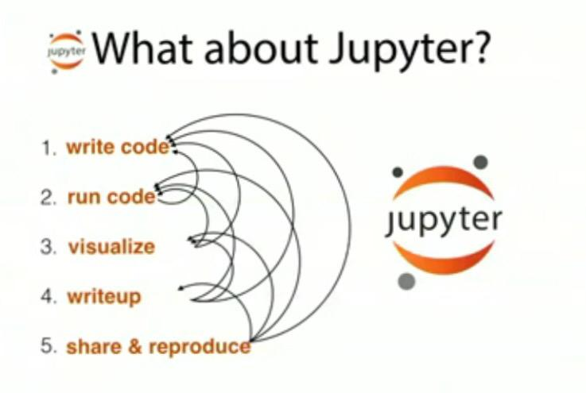

June 2015
To read: Therapeutic Area Research Concept Pilot Completion Report wiki.cdisc.org/display/SHARE/… @cdiscSHARE #cdisc
@erikboralv Intressant @RolfBrennerfelt mera detaljer? Jag hoppas också företag också ser värdet av att publicera #oppnadata & #lankadedata
Cool: Notebook Gallery. Links to the best IPython and Jupyter Notebooks nb.bianp.net/sort/views/ #jupyter
Excellent podcast, background and future fot #jupyter. Will add link to my recent blog post kerfors.blogspot.se/2015/06/jupyte… twitter.com/podcast__init_…
Correct link to my recent blog post: Jupyter Notebooks (reproducible research) kerfors.blogspot.se/2015/06/jupyte… #Jupyter

#FollowFriday: @BernHyland an #opendata and #linkeddata hero. Will update my 2015 #FF list medium.com/@kerfors/my-fo… during the weekend
New blog post: Jupyter Notebooks (reproducible research) kerfors.blogspot.se/2015/06/jupyte… #Jupyter

New blogpost: Jupyter Notebooks kerfors.blogspot.se/2015/06/jupyte… HT @minrk @pacoid @edd #Jupyter #SparkSummit
@cdsouthan Yes, I think so too, Notebooks one way to present it. See also kerfors.blogspot.se/2015/02/clinic… and phusewiki.org/docs/2015Chape…
Awesome. How about Clinical Study Reports (CSR) in Notebooks (with results and metadata as RDF Data Cube) ? twitter.com/raffaelmarty/s…
Ontology of Biomedical Investigations has defined 'record of unknown sex', subclass of 'record of missing knowledge' purl.obolibrary.org/obo/OBI_0000852
I've registered for 'The Informed Health Consumer' MOOC by @cardiffuni @FutureLearn futurelearn.com/courses/inform…
"Metadata-on-use: emergent, contextual information that arises naturally when data is assessed and analyzed for use." strataconf.com/big-data-confe…
Thinking of the combination of Notebooks, eg @ProjectJupyter & #ApacheZeppelin, together with "CSV on the Web" #csvw w3.org/2013/csvw/wiki…
I'm fascinated of what I've seen so far of notebooks such as @ProjectJupyter and #apachezeppelin hortonworks.com/blog/introduct…
Oh, yes @pacoid I remember when I saw #VisiCalc the first time in the early 80ies bricklin.com/firstspreadshe… twitter.com/ibmbigdata/sta…
Midsummer eve in Sweden so no new #FollowFriday today, however you can check out my 2015 list of favorites: medium.com/@kerfors/my-fo…
Great story: #OpenData from Tyndall (and Gutenberg) to @opentrials see also kerfors.blogspot.se/2015/02/clinic… twitter.com/rufuspollock/s…
Metadata is a Love Note to the Future slideshare.net/rlovinger/meta… <- Great slide deck from @rlovinger #metadata
Finally, I have updated my #FollowFriday list with last weeks favorite: @HansRosling medium.com/@kerfors/my-fo…
Re-Reading @bobdc's excellent blog post while waiting for the live stream from #SparkSummit to start twitter.com/bobdc/status/5…
Tonight I'll follow som of @spark_summit's live free stream (9am-6pm PST) go.spark-summit.org/spark-summit-2… #SparkSummit
New on my #FollowFriday list is a high profile Swede: @HansRosling Watching his talk live.worldbank.org/hans-rosling-b… earlier this week was awesome.
Hmm, maybe it is just me, but the name "Blur" makes me think about Brittish boy bands from the 90ies :) twitter.com/dhandelsman/st…
Consumable data modelled as RDF serialised in eg json-ld buff.ly/1GD4kf2 #LinkedData #semanticWeb #jsonLd twitter.com/mandibpro/stat…
Loads of ideas and books to read after watching this great talk by a #golang enthusiast (ping @goude) twitter.com/kennybastani/s…
Great slide deck by Tim Williams, UCB Biosciences When the [clinical trials] data is a graph phusewiki.org/docs/2015Chape… twitter.com/NovasTaylor/st…
CTS Ontology Workshop 2015, Ontology in Practice: Clinical and Translational Science ncorwiki.buffalo.edu/index.php/CTS_… Sep 23-25, Charleston, SC
Dear tweeps, any more examples of corporations with #opendata sites and ambitions?? w3.org/wiki/OpenDataC… Proposals and RT = <3
Now watching on my way home: @WorldBank Beyond #OpenData: A New Challenge from @HansRosling live.worldbank.org/hans-rosling-b…
Updated my #FollowFriday list 2015 with one more favorite on Twitter:@SusannahFox The new CTO of HHS medium.com/@kerfors/my-fo…
Interesting example of Observation Data to RDF Data Cube #csv2rdf #csvw github.com/w3c/csvw/blob/… Ping @NovasTaylor @MarcJuAndersen HT @danbri
Excellent news in a nice blog post from #xml4pharma (Jozef Aerts) #LOINC #CDISC twitter.com/lexjansen/stat…
My #FollowFriday this week is @SusannahFox I'll give some context during the weekend on my list of favourites medium.com/@kerfors/my-fo…
@michael_1962 Perfekt Michael - jag gjort RT :) Och tack för att du följer mej. Litet tips: start inte tweet med @ aliem.com/making-confere…
Excited that our abstract "Understanding Trial Design using Visualisation" got accepted twitter.com/phusetwitta/st…
I've just registered for "How to get your data into R" Free @rstudio webinar with @hadleywickham on June 10 pages.rstudio.net/Webinar-June20…
Cool! Looking forward to see DX Interaction Designer #jobs Data/Developer Experiences designing APIs and downloads twitter.com/JoinAstraZenec…
OK, got my Spark environment and Python Notebook up and running. Let's see how long I manage to keep up. twitter.com/ApacheSpark/st…
Thx for pointer to "Leveraging Pattern Semantics for Extracting Entities in
Enterprises" www2015.it/documents/proc… twitter.com/pgroth/status/…
Enterprises" www2015.it/documents/proc… twitter.com/pgroth/status/…
Survey about the Agility of the IT Function in Swedish Organizations fluidsurveys.com/s/linkedin/ from my colleague Michael Yousif at @ituniv
Nice use of company tagline #WhatScienceCanDo and of the Cancer Tag Ontology symplur.com/healthcare-has… #asco2015 twitter.com/AstraZeneca/st…